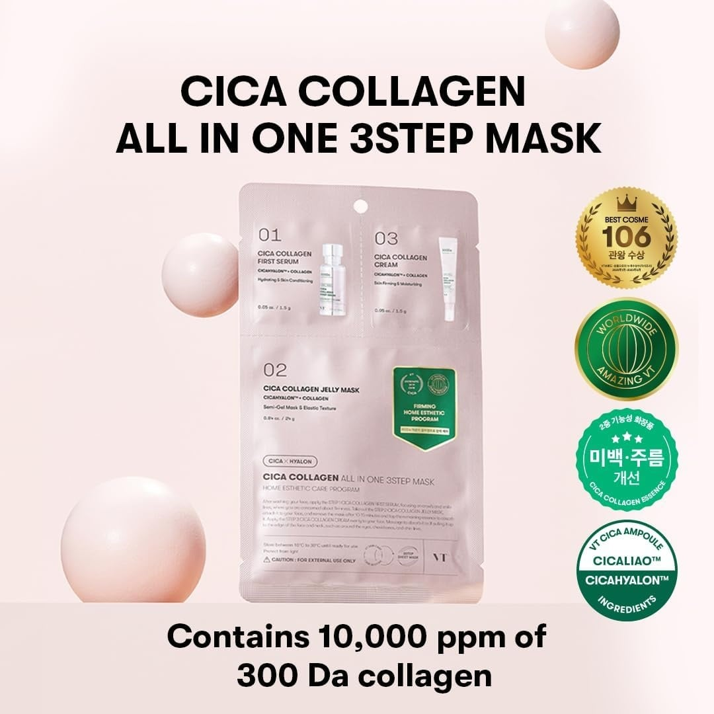
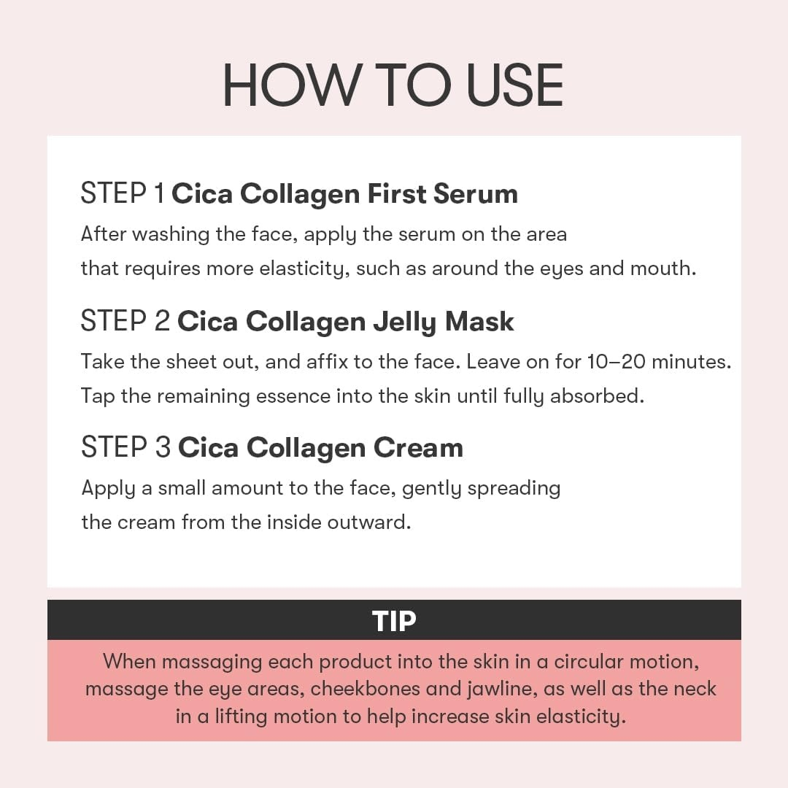
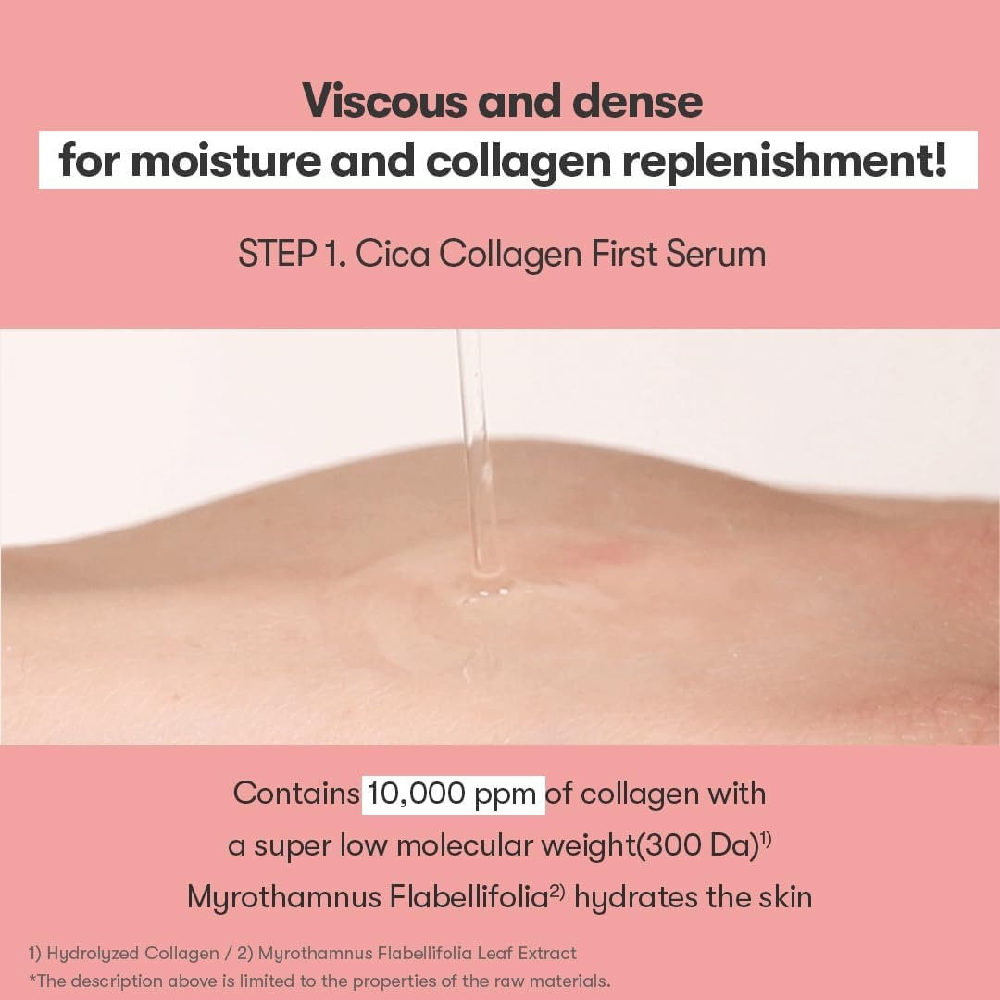
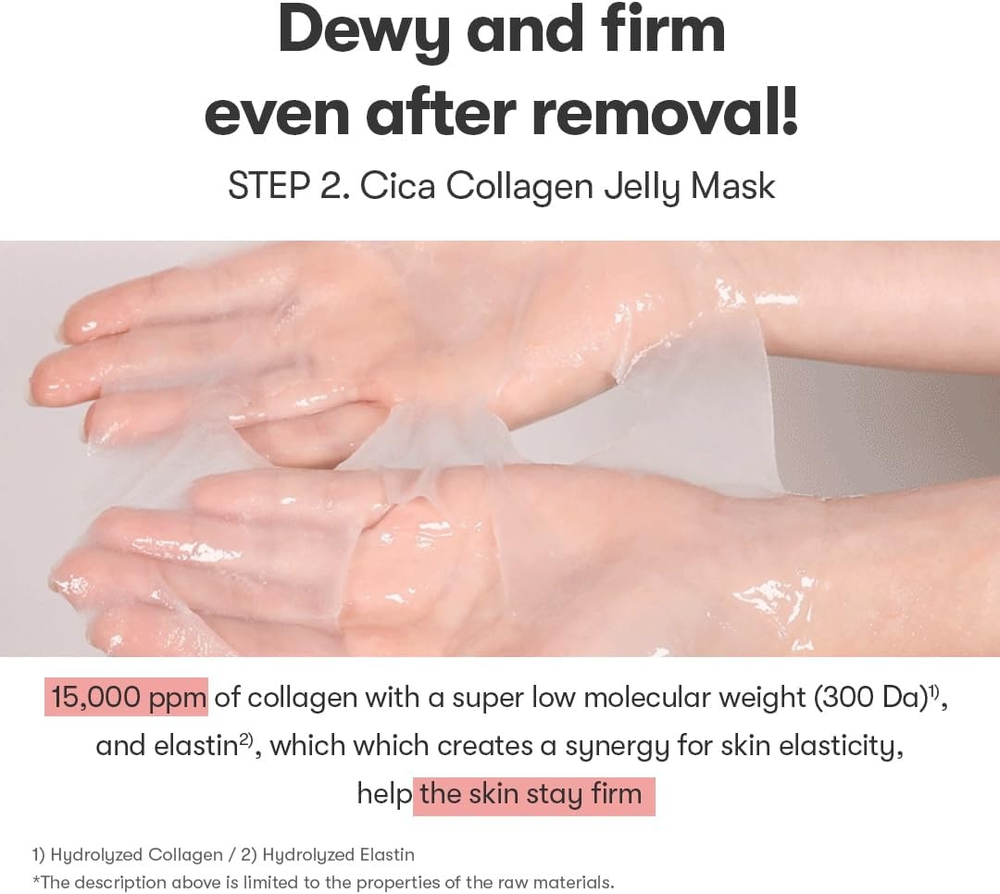
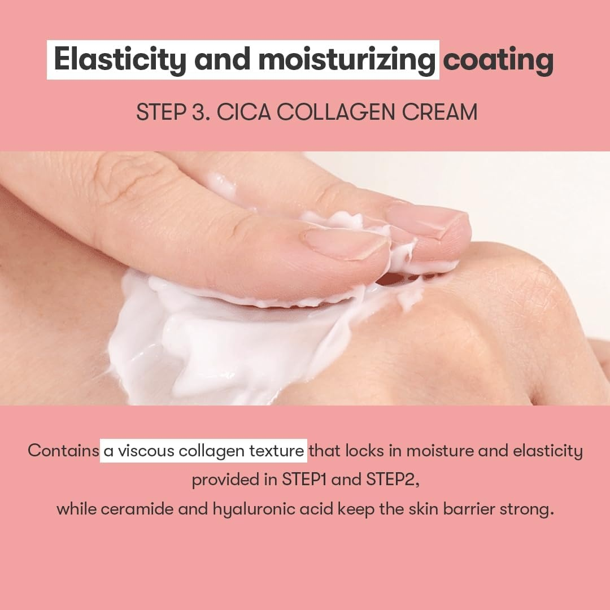
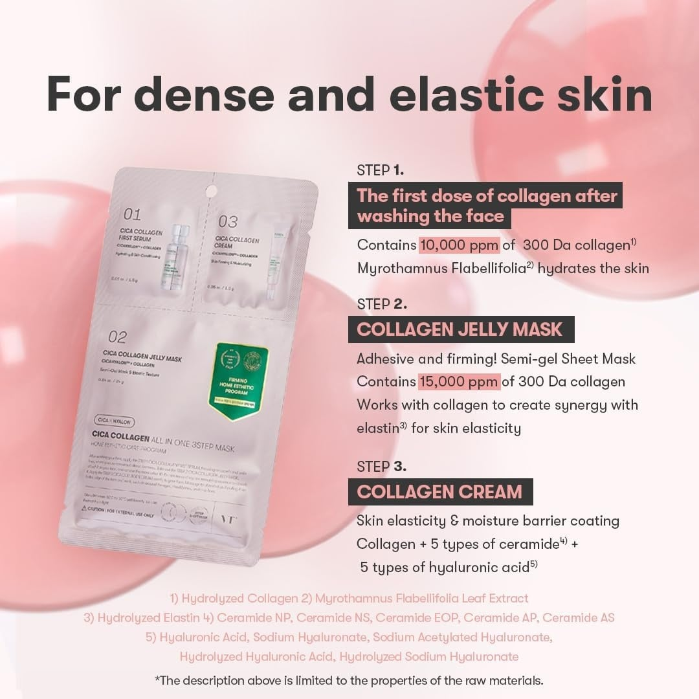
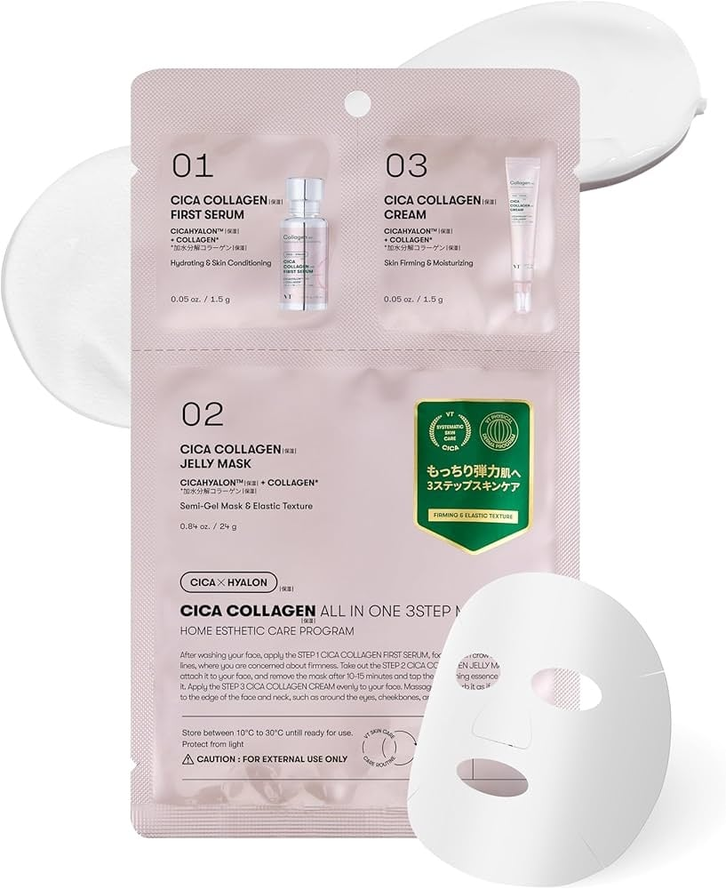

| VT Cosmetics Cica Masca de fata cu colagen in 3 pasi 27g Premiile de excelenta primite si mentioneaza concentratia puternica de 10.000 ppm de colagen pur cu masa moleculara mica (300 Da), ideala pentru recapatarea fermitatii si elasticitatii tenului. |  |
 | Instructiuni de utilizare pentru ritualul VT Cosmetics in 3 pasi. Infograficul explica aplicarea succesiva a serului initial, fixarea mastii de tip jeleu timp de 10-20 de minute si sigilarea cu crema de colagen, adaugand sfaturi utile pentru un masaj facial cu efect de lifting. |
| Cica Collagen First Serum cu o textura densa si vascoasa care infuzeaza pielea cu 10.000 ppmde colagen cu o greutate moleculara foarte mica (300 Da) si extract hidratant de Myrothamnus Flabellifolia, pregatind tenul pentru pasii urmatori. |  |
 | Detaliu vizual axat pe Pasul 2 al tratamentului: Cica Collagen Jelly Mask. Imaginea exemplifica aplicarea mastii semi-gel, infuzata cu o concentratie masiva de 15.000 ppm de colagen (300Da) si elastina, ingrediente ce lucreaza in sinergie pentru a lasa tenul ferm si luminos. |
| Textura fina si densa a cremei care fixeaza hidratarea hidratarea si elasticitatea obtinute la pasii 1 si 2, in timp ce infuzia de ceramide si acid hialuronic fortifica puternic bariera cutanata. |  |
 | Infografic explicativ complet ce detaliaza beneficiile celor trei pasi sinergici din masca VT Cosmetics. De la serul initial intens hidratant, trecand prin masca aderenta cu elastina si pana la crema finala imbogatita cu 5 tipuri de ceramide si acid hialuronic, produsul reface complet densitatea pielii. |
| Plicului compartimentat VT Cosmetics Cica Collagen All In One 3Step Mask, alaturi de masca textila decupata. Designul inteligent separa cele trei formule (ser, masca-jeleu si crema) pentru a asigura un program estetic complet de rejuvenare, ideal pentru utilizarea acasa. |  |